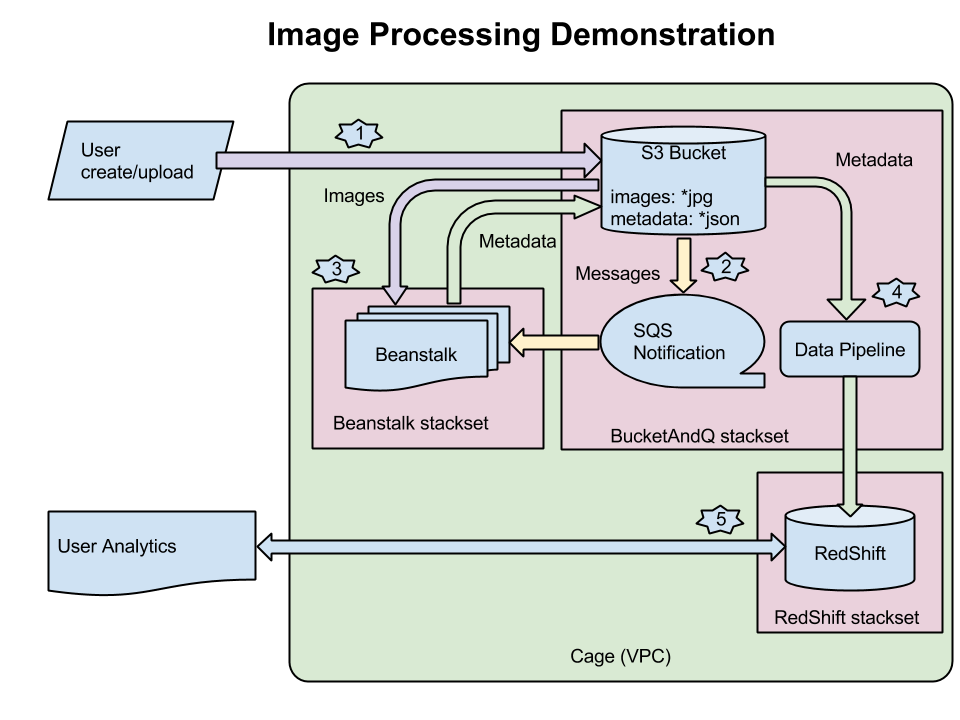

Image Processing Demo/Reference Application
47Lining has created a reference application which illustrates usage of the Nucleator in an image-processing application with analytics. We have found a number of customers who are interested in this type of application, therefore we imagined a prototypical architecture. In this demo, we upload to S3 images which contain a QR code of a product URL, a date and time stamp, and geolocation information. This might be the result of a smartphone application where users can scan QR codes of products they are browsing. We process these images to extract that data and import it into Redshift for analytical processing.
The architecture looks like this:

To get from image upload to Redshift analytics, we use several AWS and Nucleator features:
- a Nucleator Cage to hold various stacksets
- a Redshift stackset for the database
- a Beanstalk stackset to process the images
- a custom Nucleator stackset which creates an S3 bucket with notification to SQS on object PUT. It also has a DataPipeline which copies the data into the Redshift cluster.
Processing flow:
- Upload an image to the S3 bucket. We have also created an image pump application which inserts a large amount of images. This is described below.
- The S3 bucket automatically posts a notification to SQS.
- The beanstalk stackset is a worker tier application. This means it automatically subscribes to the SQS queue and calls the application code. The code gets the name of the object uploaded to S3, reads the object, parses out the interesting data (product url, date/time, location), and writes that back to S3 in a JSON file. The nice part of this architecture is that the beanstalk automatically scales up and down based on the load.
- Periodically, the DataPipeline runs and copies all the JSON files into a table in the Redshift database.
- The user can connect to the Redshift database with analytics tools such as Looker or Tableau and analyse the data.
Loading Data
We have created a separate application which generates sample data to tell a story.
This application is similar in that it is a worker tier beanstalk application. In this case, the messages in the SQS queue only have a date/time stamp. The messages are inserted into the queue by the "orchestrator" which is simple code which can run on the user's local machine or on an EC2 instance. The "distributor" subscribes to the queue and based on configuration information, decides whether to write an image for the input date and if so, what the product url and location will be.
Provisioning
The current steps to run:
- nucleator cage provision/configure (if necessary)
- nucleator redshift provision --public
- add qrcode-generator and imageprocessing-demo to sources.yml
- nucleator update
- nucleator bucketandq provision in that cage. Note the URL of the queue that is created
- nucleator beanstalk provision/configure/deploy of sqs_worker code
Creating the image ingestion process:
- nucleator beanstalk provision/configure/deploy of the distributor code; this can be in the same cage as the image processing application
- run the orchestrator